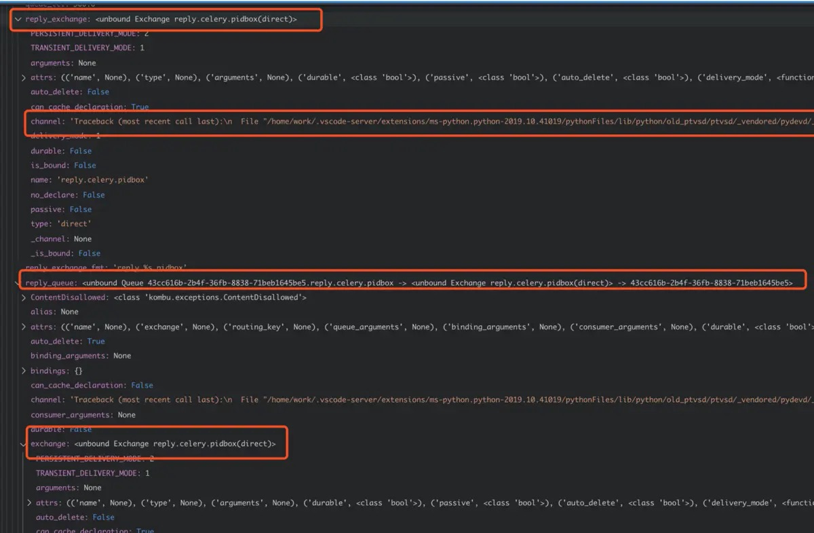

Celery 4.3 BUG 排查
Contents
celery4.3.0的一个bug排查
错误现象
worker-inspect监控功能, 如celery -A proj inspect stats
始终报如下错误:
|
|
环境
python==3.7.3
celery==4.3.0
kombu==4.6.4
redis==3.2.0
debug过程
错误历程
开始以为是worker-online事件被自己写的monitor catch主了，想通过屏蔽catch解决，结果发现worker-online事件仅仅是上线的时候会发出这个event,而且inspect和events没有半毛钱关系
后来正确历程如下:
搭建了debug环境，观察实例变量，如图：

经调试，发现app.pidbox实例为None
进一步调试发现 celery.pidbox这条路由的channel实例（即connection）有一条隐晦的traceback：
|
|
由此发现原因：
replay.celery.pidbox这个routing_key和exchange没有绑定一个channel
当了解到这极可能是一个框架BUG后，分别对celery升级到4.4.0rc3, kombu升级到4.6.5， redis升降级都试过了，均无效。
因此决定从原理和源码入手，重新理解了下路由过程（connection绑定exchange和queue，通过不同的路由方式走connection）和control模块(内建connection，exchange)找到了真正的issue及原因为当前版本kombu对redis数据操作的抽象问题 详细原因及解决方案，可参见：
issue: https://github.com/celery/kombu/issues/1087
pr: https://github.com/celery/kombu/pull/1089
9月1号交的pr，被别人抢先一个多月,哈哈~~~
简单解决方案
在不合master代码的情况下（issue上说kombu 4.6.5 搭配 celery 4.4.0rc4 已经最终解决），暂时可以通过降级kombu==4.6.3解决
Author sylzd
LastMod 2019-10-24